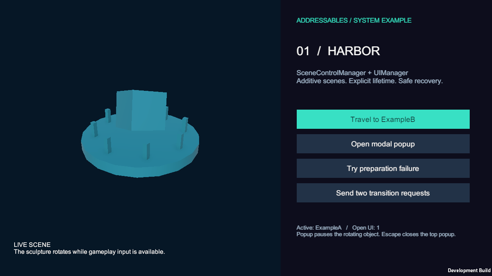
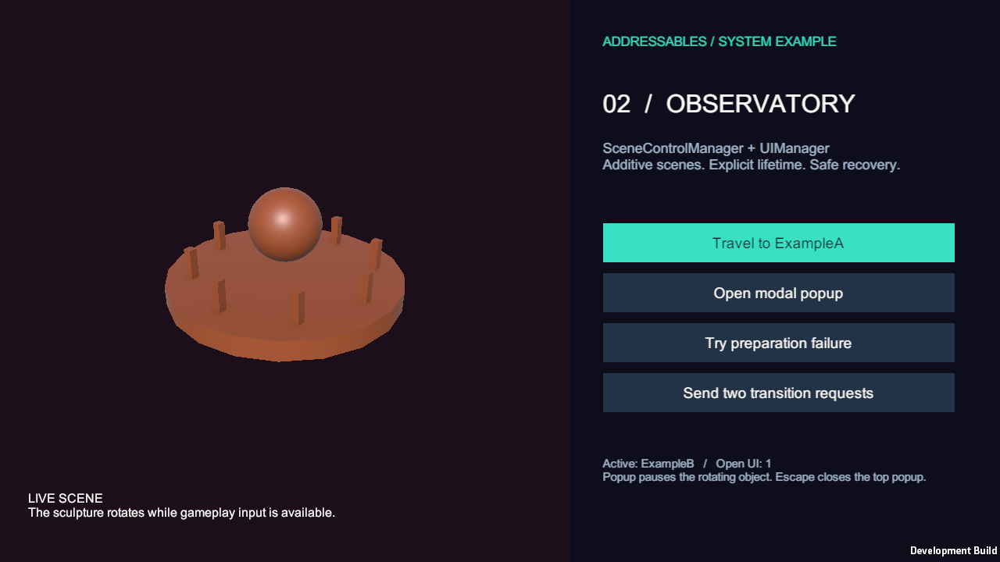
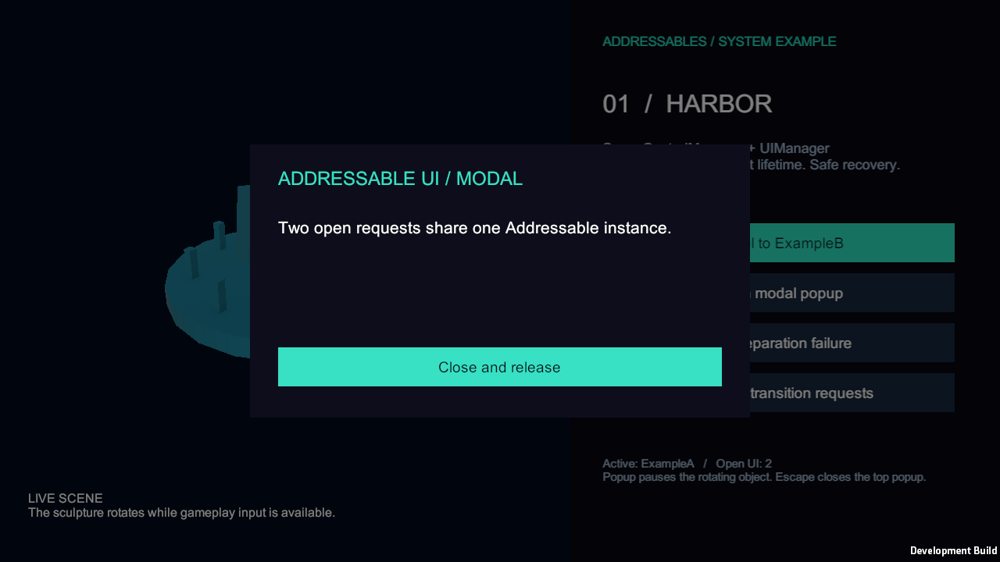
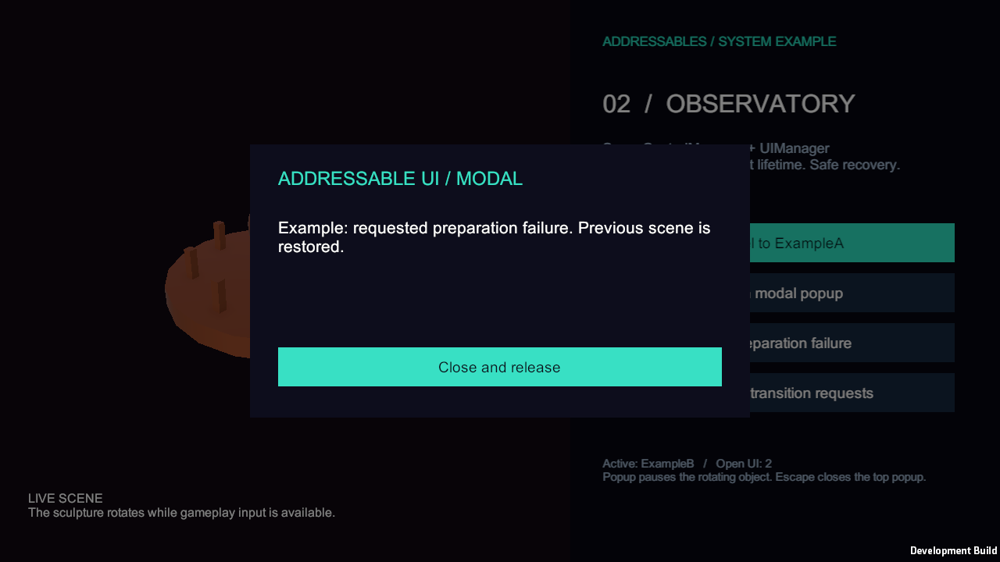

Tracefolio REPORTS & ISSUES
Tracefolio REPORTS & ISSUESSceneControlManager·UIManager 구현 및 씬 예제 검증
완료Addressables 기반 씬 전환·UI 수명 관리와 테스트 씬 2개, 로딩·화면·팝업 예제를 구현했습니다. 최종 Windows 플레이어 검사 57개와 실제 화면 검증을 통과했습니다.
작업 결과
구현·원본 반영·실제 Windows 플레이어 빌드 및 실행 검증을 완료했습니다. 요청하신 이름 SceneControlManager를 사용했습니다. Unity 6000.0.83f1, Addressables 2.9.1 기반입니다.


변경 내용
적용 내용
SceneControlManager는 Additive 로드·준비·기본 화면 생성 후 이전 UI·씬을 정리하고 게임플레이를 시작합니다. 중복·동일·미등록 씬 요청을 거부하며 준비 또는 기본 화면 생성 실패 시 이전 활성 씬과 화면을 복원합니다.
UIManager는 Screen/Popup/Overlay 계층과 Scene/Global 수명을 구분합니다. 동시 열기는 하나의 인스턴스를 공유하고 닫기·씬 정리는 대기 로드 결과도 무효화합니다. InstantiateAsync/ReleaseInstance 수명을 관리하며 팝업과 전환의 입력 차단 소유권을 합칩니다. 프레임 끝 파괴 전에 먼저 비활성화하여 닫힌 UI가 클릭을 가로채지 않도록 했습니다.
SceneCatalog·UICatalog·SceneContent·UIView 계약을 추가했습니다. 기존 HUDManager와 게임 씬은 수정하지 않았습니다. Addressables 기존 그룹은 보존하고 SceneUI-Scenes·SceneUI-UI 전용 그룹을 추가했으며 Bootstrap 빌드 씬만 추가했습니다. 원본 Packages/manifest.json은 변경하지 않았습니다.
예제: Assets/Examples/SceneUI/Scenes/SceneUIBootstrap.unity에서 시작하여 ExampleA(Harbor)·ExampleB(Observatory)를 이동합니다. 씬 안의 화면 버튼으로 정상 이동, 모달, 의도된 준비 실패 복구, 동시 전환 요청을 시연합니다. 모달이 열리면 오브젝트 회전이 멈추며 Escape로 닫으면 재개합니다.
실행: Sample Project → Scene UI → Open Example Bootstrap → Play. Create or Refresh Examples 메뉴는 예제 에셋을 재생성하고 Build Verification Player는 콘텐츠와 Windows 실행 파일을 빌드합니다. 실행 파일은 프로젝트 Builds/SceneUIExample/SceneUIExample.exe에 보관했습니다.
API: await SceneControlManager.Instance.ChangeSceneAsync("ExampleB"); await UIManager.Instance.OpenAsync("ExamplePopup", "메시지"); UIManager.Instance.Close("ExamplePopup");
사용 문서: docs/documentation/26-developed-scene-ui.md. 씬 폴더에도 README를 추가했습니다.


검증
최종 플레이어 결과: 57개 통과, 오류 0개. 실행 2026-11-01T15:55:14.3035899+09:00 → 2026-11-01T15:55:20.4027296+09:00. 실제 QA 결과 JSON. 정상 왕복과 6회 반복, 중복 요청 거부, 잘못된 ID, 모달 중첩·입력 정지·복원, 로드 도중 닫기, 씬 수명 정리, 준비 실패·기본 화면 누락·로딩 UI 누락 후 복구를 실행했습니다. 실제 EventSystem 레이캐스트로 버튼을 선택해 클릭 이벤트를 전달했고 InputSystem에 Escape 상태를 넣어 닫기를 검증했습니다.
반복 후 Bootstrap+목적지 씬 2개, 화면 인스턴스 1개, EventSystem 1개가 유지됐습니다. 이는 해당 시나리오의 개수 검사이며 전체 게임 메모리 누수 부재를 증명하지는 않습니다.
소스 16개 SHA-256과 예제 에셋·메타 24개를 검증 복사본과 원본에서 대조해 일치를 확인했습니다. 소스 대조, 에셋 대조. 원본 에디터가 실행 중이어서 프로젝트 복사본에서 빌드했으며, 복사본의 MCP Git 재다운로드 대기는 설치된 동일 MCP 소스의 로컬 참조로 해결했습니다.
화면 5장은 직접 렌더 프레임을 캡처하고 모두 시각 검사했습니다. 1280×720, 34,359~104,187바이트의 원본 PNG이며 편집·리사이즈·별도 최적화 없이 200KB 목표를 충족합니다. 화면 크기·바이트·해시.
초기 배치 캡처와 숨김 캡처는 검은 화면이라 각각 실패로 보존했습니다. 사용자 허용 후 실제 창을 표시하고 WaitForEndOfFrame 뒤 ScreenCapture로 캡처했으며 최종 QA는 검은 캡처도 거부합니다. Unity 6 캡처 시점 문서.
문서 27개·로컬 링크 908개 검증, 페이지 내부 이동·뒤로 가기·검색 검증, diff 공백 검사를 통과했습니다. 갱신 record 후 재빌드했으며 snapshotChanges는 0입니다.

남은 사항
다른 플랫폼 실행, 원격 CDN·오프라인 재시도, 실제 게임 콘텐츠의 메모리 프로파일링은 미확인입니다. 기존 Pawn 입력은 자동 변경하지 않았으며 IsGameplayInputBlocked 또는 변경 이벤트에 연결할 수 있습니다. 기존 일반 빌드 설정의 누락된 SampleScene 경로는 보존했고 예제 전용 빌드 메뉴는 Bootstrap을 명시해 검증했습니다.
게임 프로젝트는 자동 커밋·푸시하지 않았습니다. 중앙 보고서와 첨부만 게시합니다.
교훈 검토: 변경 없음. 권한이 제한된 프로세스 조회의 빈 결과와 검은 캡처를 완료 근거로 삼지 않고 재검증했습니다. 기존 전역의 구체적 증거·실제 화면 검증 규칙에 포함되므로 중복 규칙은 추가하지 않았습니다.
작업 시간
- 제안 시간: 25~45분
- 실제로 완료된 시간: 시작 2026-11-01 15:30:16 KST. 최종 게임 실행 QA 완료 2026-11-01 15:55:20 KST(25분 4초). 보고서 작성 시점 2026-11-01 15:57:32 KST까지 1637초. 공개 배포 확인은 후속 메뉴얼과 최종 채팅에 기록합니다.
- XERJ: 미사용 — 제공된 XERJ MCP와 프로젝트 검색 스크립트가 없어 rg로 코드 검색을 수행했습니다.